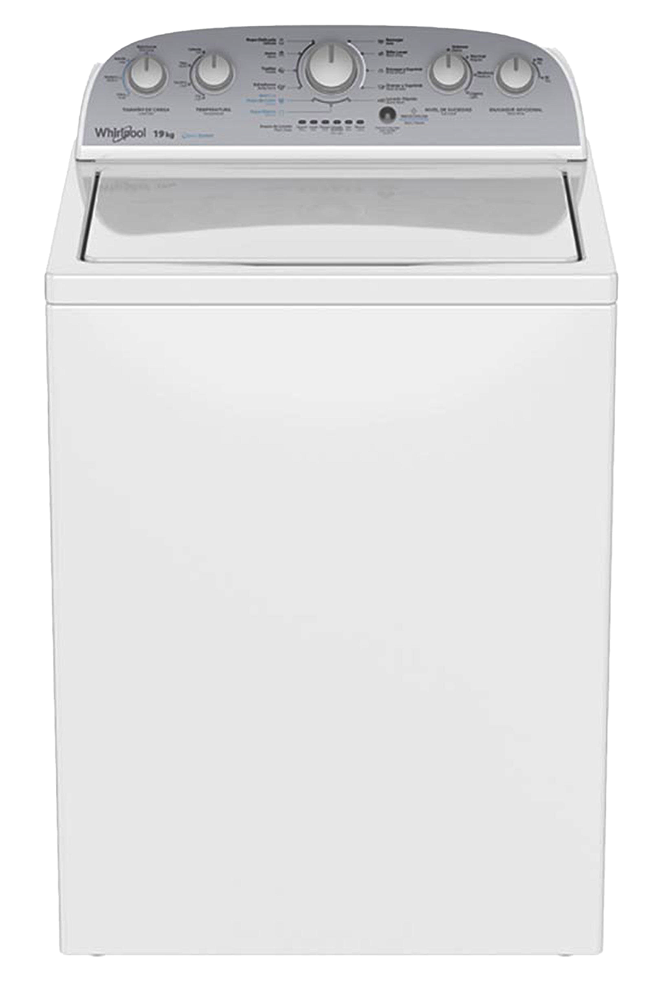

LAV0001
Introducción a lavadoras
|
Lavadoras Bienvenido al curso de Diagnóstico y Reparación de Lavadoras, diseñado especialmente para técnicos que buscan fortalecer sus conocimientos y habilidades en el mantenimiento y servicio de uno de los electrodomésticos más esenciales en el hogar. A lo largo de este curso, exploraremos a fondo el funcionamiento de las lavadoras automáticas, desde los principios básicos de su operación hasta el diagnóstico avanzado de fallas. Aprenderás a identificar problemas comunes, interpretar códigos de error, realizar pruebas de componentes y aplicar procedimientos de reparación siguiendo las mejores prácticas de la industria. Este curso combina teoría y práctica, integrando simuladores interactivos y casos reales para ofrecer una experiencia de aprendizaje dinámica, eficiente y enfocada en el desarrollo profesional. Al finalizar, estarás capacitado para brindar un servicio técnico confiable, seguro y de alta calidad, optimizando tiempos de atención y aumentando la satisfacción del cliente. |
 |